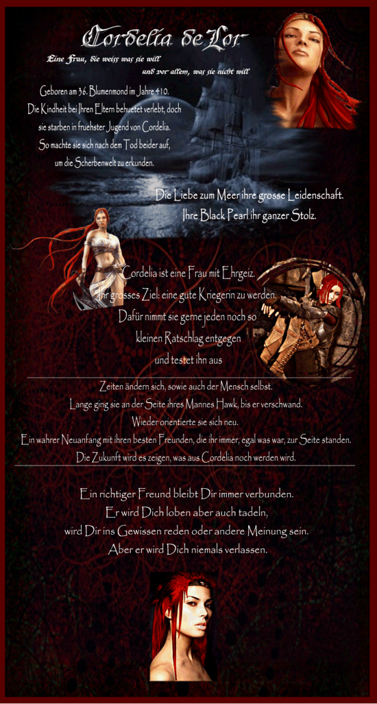

|

|
Das schwarze Brett
|
|
| Übersicht,
Geschichten (RPG) |
|
Das Leben kann so schön sein... (912  ) )
|
| Cordelia deLor (RIP) |
Lange konnte ich nicht mehr wach gelegen haben. Eingeschlafen nach diesem ereignisreichen Tag und die Träume umhüllten mich. Plötzlich war ich wieder ein Kind von kaum mehr als 10 Jahren. Ich stand auf einer Insel im ewigen Schnee. Ein Rumps ward zu hören. Mein ganzer Körper vibrierte als ich mich umdrehte. Wieder stürzte ein Stollen ein, Wieder hielt mich jemand an der Hand fest, dass ich nicht hinein konnte. In diesem Augenblick schnellte ich hoch und bemerkte, dass es ein Traum war. Meine Stirn war über und über mich kleinen Schweißperlen belegt. Meine Vergangenheit schien mich einholen zu wollen. Kurzerhand setzte ich mich auf das Bett. Mein erster Blick dabei fiel auf den Schlüssel um den Hals. Nahm ich ihn schnell in die Hand, hielt ihn kurz fest und steckte ihn dann unter mein Hemd. Eiligst zog ich meine Stiefel an und ging an Deck.
Ein herrlicher Morgen erwartete mich. Blauer Himmel, strahlender Sonnenschein und eine leichte Brise wehte über das Meer. Ich blickte mich von der Luke her erstmal um. Meine Mannen waren ruhig, aber dennoch gut beschäftigt. Allsun stand am Steuerrad und meine Halborkdame hatte das Fernrohr in der Hand und hielt Ausschau nach Land. Meine Schritte über die Planken des Decks führten mich an die Reling direkt neben Cadhla. Sie lächelte mich an und übergab mir das Fernrohr. Ich schaute hindurch und sah die ruhige See. Meinen Kompass zückte ich dazu und sah, dass alles in beste Ordnung ward. So konnte ich mich um meine Kinder kümmern. Ein gutes Frühstück sollte den Anfang machen. Natürlich machte ich nicht nur für uns drei, sondern für die ganze Mannschaft. Als ich fertig mit den Zubereitungen war, weckte ich Chrissi und Tarion. Sie waren schon längst wach als ich in ihre Kajüte hineinblickte. Ich sah nur ihre Hinterteile. Sie schauten schon längst durch das Fenster in ihrer Kajüte und schienen dabei sehr vergnügt. Ich stellte mich in die Tür, lehnte mich gemütlich an den Rahmen und räusperte mich. Oh, wie schnell zuckten sie zusammen und drehten sich um. Als sie mich sahen, fingen sie lauthals mit mir an zu lachen. Schnell warn sie angezogen und saßen am Tisch. Der Anker wurde herabgelassen und schon waren wir alle beisammen und frühstückten ausgiebig. Alle redeten vergnügt durcheinander. So einen Morgen gab es lange nicht mehr.
Gesättigt ließ ich den Anker wieder einholen und wir nahmen wieder Fahrt auf. Der Kurs immer weiter gen Norden. Wir segelten in voller Fahrt. An Inseln vorbei, an Schiffen mit den unterschiedlichsten Flaggen. Ich schaute immer wieder zu diesen und hielt nach den Flaggen auf den ästen derer Ausschau. Was mich wunderte, dass wir auf der ganzen Reise bisher auf noch keinen Piraten gestoßen sind. Auch schienen uns die Lichtsieben nun hold zu sein. Kein Sturm kam mehr auf der Reise, aber es wurde merklich kühler, je mehr wir uns dem eisigen Norden näherten. Im Blumenmond in Wintermantel ist schon etwas Besonderes. Obwohl, ich bin es ja mit meiner Segelei mittlerweile gewohnt.
Die Tage auf See vergingen wie im Fluge und Land der Eisinsel wurde gesichtet. Nun war es daran nach Eisbergen Ausschau zu halten. Langsam segelten wir an mächtigen Eisbergen immer weiter in die Kälte. Sie drang durch unsere Kleidung. Ein Anleger ward gesichtet und schnell zückten wir die Karte, wo wir unseren Fußmarsch aufgezeichnet hatten. Wir legten an. Der Anleger war rutschiger als ich es in Erinnerung hatte. Dann begann der Fußmarsch. Voll beladen und mit Karten und Kompass in der Hand stapften wir durch den Schnee.
Freifrau Cordelia deLor,
Vorsteherin von Butterwiese,
Anführerin der glorreichen Nation "Die Tajus",
Stern des Hector von Troja,
Das Herz der Tajus
Zur 3. Stunde am 53.Blumenmond im Jahre 443 |
05.09.10 9:53
|
|
| Cordelia deLor (RIP) |
Durch tiefen Schnee führte uns unser Weg. An riesigen Bergen vorbei. Die Täler waren teilweise vereist. Ein starker Wind blies durch die Täler. Wir kamen nur langsam voran, doch unser Ziel immer näher. Immer wieder hielten wir an und schauten auf die Karte und nahmen den Kompass. Wir mussten nun doch einen Umweg gehen. Eine tiefe Schlucht ließ uns nicht den Weg nehmen, den wir uns auf der Karte heraussuchten. Es muß eine Gletscherspalte gewesen sein, die eingestürzt ist. Am späten Abend erreichten wir eine kleine Hütte. Sie sah sehr verfallen aus. Ich trat als erstes ein. Drinnen war alles mit Staub und Spinnweben bedeckt. Doch die Hütte war ansonsten heil. Ich wunderte mich, dass all die Jahre niemand diese Hütte gefunden hatte. Amyl begann erst einmal richtig einzuheizen. Er zauberte uns Holz und Feuer für den Kamin her. Im Schein des Feuers begann ich meinen Mantel erstmal loszuwerden und suchte nach einem Schrank. Doch hier oben fand ich nichts. Nur einen Schrank, in dem alte Flaschen mit Rum und Becher standen. Bei dem Anblick griff ich gleich zu. Entkorkte die erste Rumflasche, die mir in die Hände fiel und probierte ihn mit einem großen Schluck. Meine Mannen begannen zu lachen hinter mir. Ich wusste genau, was sie meinten. JA, der Rum hat es mir angetan. Ich erinnerte mich gerade in diesem Moment, wie ich meinen ersten Rum trank - da musste ich mit den anderen zu Lachen beginnen. Cadhla schaute sich derweil genauer in der Hütte um. Sie trat ganz vorsichtig auf den Boden auf, welcher auf einmal sehr merkwürdig knarrte. Darauf lag ein alter aufgetretener Teppich, voller Schmutz und kleinen Steinen aus den Steinbrüchen hier oben. Schnell ging ich zu ihr und stieß den Teppich mit dem Fuß beiseite. Eine Luke wurde sichtbar. Ein großes Schloss verhinderten ungeliebten Besuch den Eintritt. Niederkniend nahm ich meine Kette ab und nahm den Schlüssel in die Hand. Leicht zögernd steckte ich diesen dann ins Schloss. Und ja er passte. Schnell sprang das Schloss auf, als ich den Schlüssel drehte und öffnete die Luke. Gähnende Schwärze kam zum Vorschein. Meine Kinder blickten mit Erfurcht hinab. Ihre Augen waren weit aufgerissen.
Auch ich blickte hinab und erinnerte mich an die dunklen Minen hier oben. Irgendwie musste ich schon einmal hier gewesen sein, denn ich ging wie im Traum zu einer Kommode und holte eine Grubenlampe heraus. Es war sogar noch Petroleum in ihr und so ließ ich sie entzünden. Zu meinen Kindern noch einmal gewand "Ihr bleibt hier und versuchte etwas für die Nacht zusammen zu suchen!". Dann trat ich als erste hinab. Nur Amyl und Cadhla begleiteten mich. Der Rest blieb oben in der Hütte. Zu erst dachte ich, dass dies ein Keller war, Doch dem war nicht so. Ein Gang in den Stein gehauen, dem folgten wir ein ganzes Stück. Dann standen wir vor einem Stollen, welcher durch eine Bretterwand versperrt ward. Neben dieser Bretterwand erblickte ich das passende Werkzeug, um die Bretter heraus zu brechen. Es schien als wurden sie damals achtlos in der Flucht liegen gelassen. Als die Bretter entfernt waren, was eine staubige Angelegenheit war, trat ich ein. Ein Raum, welcher aus dem Berg gemeißelt worden ist, kam zum Vorschein. In Mitten ein großer Schreibtisch, welcher schon sehr alt, aber noch sehr stabil aussah. An der Wand war ein Regal. Es war in den Stein gehauen und auf diesem standen einige Bücher in hohem Staub. Ich setzte mich auf den Stuhl am Schreibtisch, während sich Amyl der Schriften und Bücher in den Regalen annahm. Cadhla schaute sich weiter im Tunnel um. Auf dem Tisch lagen alte Aufzeichnungen. Aufzeichnungen von der Zeit, bevor Vaters Mine einstürzte. Ich wollte nach einer Weile schon fast verzweifeln, als ich durch Zufall unter den Tisch fasste und bemerkte, dass dort etwas angeklebt war. Es musste mit dem Talg der Kerzen angeklebt worden sein. Ich sprang auf und krabbelte unter den Tisch und sah dort unter. Ein Stapel Briefe waren dort säuberlich mit einem Strick zusammengebunden und klebte an der Tischunterkante fest. Vorsichtig löste ich die Briefe mit meinem Dolch vom Tisch und krabbelte zurück. Amyl kam derweil mit einem Tagebuch zurück vom Regal und war so am Lesen, dass er über mich Krabbelnde fast gefallen wäre, hätte ich nicht einen Ton von mir gegeben. Ein Lachen erhallte von uns beiden, was Cadhla schnell zurücklockte. Sie fand nichts weiter als einen eingestürzten Stollen weiter hinten, wie sie berichtete.
Wir nahmen die Aufzeichnungen mit und machten uns auf den Rückweg. Auf dem Weg hörten wir ein lautes Grollen, als würde die Erde erbeben. Wir liefen schnell zu dem Eingang zurück. Atemlos erklommen wir die Leiter nach oben durch die Luke zurück in die Hütte. Schnell wurde die Luke geschlossen und verriegelt. Den Schlüssel band ich mir wieder um den Hals.
Die Krieger hatten in der Zwischenzeit für etwas Ordnung gesorgt und haben ein Nachtlager bereitet. Sowie haben sie Speis und Trank auf den Tisch gestellt. Eine Stärkung brauchten wir nun. Im Schein der Öllampe speisten und tranken wir gemeinsam. Augenblicke später brachte ich meine Kinder zu einem Bett, welches sie sich teilten und schnell einschliefen. Der Tag war anstrengend genug für die Beiden gewesen.
Mit Amyl begann ich am Tisch und im dunklen Schein die Schriftstücke zu ordnen und zu entziffern. Es waren die Aufzeichnungen meines Vaters und seinen Grubenkumpeln. Die Briefe selber begann ich alleine zu lesen. Es waren die ersten Aufzeichnungen von meinem Onkel. Den Nahmen konnte ich in den ersten Briefen nicht lesen. zu vergilbt waren die Pergamente gewesen. Ich schaffte an diesem Abend nicht alle und schlief einfach am Tisch sitzend irgendwann über diesen ein.
Freifrau Cordelia deLor,
Vorsteherin von Butterwiese,
Anführerin der glorreichen Nation "Die Tajus",
Stern des Hector von Troja,
Das Herz der Tajus
Zur 18. Stunde am 84.Blumenmond im Jahre 443 |
12.09.10 18:51
|
|
| Cordelia deLor (RIP) |
Ich erwachte früh am Morgen. Alles um mich herum schlief noch. Leise stand ich auf und ging zur Tür hinaus. Es hatte aufgehört zu schneien und so ging ich etwas abseits der Hütte und setzte mich auf einen Stein, welcher voller Schnee war. In meinem Mantel spürte ich die Kälte kaum. Ich schaute mich sitzend um und fragte mich, was das für ein Geräusch wohl gewesen sein mochte gestern Abend in dem Tunnel. Doch ich konnte es nicht zu ordnen. Um mich herum waren große Felsen, welche Schneebedeckt in der Sonne glitzerten. Die Luft war klar und meinen Atem konnte ich genau erkennen. Irgendwie faszinierte mich die Landschaft hier oben sehr. Nur fehlte mir das Vogelgeschwitzer. Ich muß eine ganze Weile da so gesessen sein und irgendwann erschraken mich meine Kinder und lachten vergnügt als sie sahen, wie ich vor Schrecken vom Stein in den Schnee fiel. Es muß ein lustiger Anblick gewesen sein. Sie holten mich auch sofort damit aus meinen Gedanken. Ich schleuderte ihnen so gleich eine Ladung Schnee entgegen und eine heftige Schneeballschlacht entstand. Oh, wie lustig es war. Fehlte eigentlich nur einer - Hector. Was er nur machen würde und ob er meine Zeilen auch bekommen hatte? Doch ich hatte keine Zeit darüber nachzudenken, denn meine Beiden waren wirklich geschickte Schneeballwerfer. Ich hatte somit alle Hände zu tun. Irgendwann ergab ich mich vor den Beiden, welche sich lachend auf mich stürzten. Einige Moment genossen wir die Dreisamkeit, doch dann riefen uns die Mannen, dass wir nun wieder abreisen könnten. Ich raffte drinnen in der Hütte noch die ganzen Papiere beisammen und war Abmarsch bereit. Der Rückweg war etwas erträglicher. Es schneite die gesamte Strecke nicht mehr. Als wir am letzten Felsen vorbei gingen, konnten wir schon die Pearl sehen.
Angekommen an Bord hatten wir schnell die Leinen losgebunden und schon ging es heimwärts. Ich blieb die folgenden Tage viel unter Deck und studierte die Briefe. Versuchte so einige erstmal zu entziffern. Sie waren durch die Lagerung und durch das Alter teilweise schon sehr unleserlich geworden. Die Reise heimwärts nach Loh verlief ohne besondere Vorkommnisse. Eine Taube kam uns entgegen und Amyl rief mich an Deck. Sie kam auch auf mich zu und am Siegel erkannte ich schon, dass sie von Hector war. Nur etwas war an dem Siegel anders als sonst. Als wäre es zittrig aufgestempelt. so verschwommen. Ich riß den Brief auf und las ihn. Als ich ihn gelesen hatte, sanken meine Hände gen Boden und ich schrie über das Deck. Ziel - Heimathafen Troja
Freifrau Cordelia deLor,
Vorsteherin von Butterwiese,
Anführerin der glorreichen Nation "Die Tajus",
Stern des Hector von Troja,
Das Herz der Tajus
Zur 7. Stunde am 54.Erntemond im Jahre 443 |
26.09.10 16:15
|
|
| Cordelia deLor (RIP) |
Die Tage sind düster geworden um mich. Seid ich die Pearl gen Troja gesteuert habe.
In Troja angekommen habe ich Hector gesucht. Ich lief durch die engen Gassen und Strassen. Ich rief nach ihm, doch nichts war von ihm zu sehen. Es war als würde hier in der Stadt ein Kampf stattgefunden haben. Ich suchte sämtliche Gebäude nach ihm ab und schlussendlich begab ich mich in das Rathaus. In das Rathaus, wo ich viele schöne gemeinsame Stunden mit ihm verbrachte. Ich betrat die Zimmer, wo einst meine Kinder nächtigten und das Zimmer, wo wir uns denn des nächtens aufhielten. Es herrschte Unordnung und Chaos. Dasselbe Bild, wie schon in den Gassen der Stadt. Dann betrat ich leicht zögernd sein Schreibzimmer. Überall lagen Papiere herum. Überall war alles durcheinander. Ich setze mich auf seinen Stuhl und wühlte leicht in seinen Dingen. Dann fiel mein Blick auf ein altes Buch. Ein Buch, von dem er mir wohl erzählte. Vorne drauf stand "Nordlicht". Ich nahm es zur Hand und blätterte drinnen. Las einige Zeilen, doch ich wurde nicht schlau aus dem wirren Geschreibsel. Schlussendlich lag ich es an den Platz zurück.
Ich schaute mich um, und irgendwie kam es mir nicht mehr so bekannt vor alles. Es hatte sich viel während meiner Abwesenheit hier verändert. Ich beschloss wieder das Zimmer zu verlassen und kehrte zurück auf den Markt. Die Menschen schauten mich mit großen Augen an. Sehr merkwürdig war das alles.
Dann verließ ich Troja. Auf dem Schiff erzählte ich meinen Mannen von dem, was ich sah und erzählte auch von einer Ausgrabungsstätte. Wir beschlossen die Segel zu setzen und segelten hin - hin zur Ausgrabungsstätte. Meine Sorge um meinen Liebsten wurde immer größer. Nach Stunden kamen wir endlich an. Hier sah alles noch mysteriöser aus. Die Leute schauten mich an, als sei ich ein Geist. Ich erkundigte mich, wem die Stadt gehörte und fand bald heraus, dass die Bürgermeisterin meine Freundin Enit war. Auch hier lief ich dann durch die Gasse und rief meinen Liebsten.
Doch auch hier bekam ich keine Antwort... bis ja bis ich die Stimme von Enit selber vernahm. Erschrocken drehte ich mich um und sah sie mit großen Augen an. Eine Weile unterhielten wir uns und sie wusste auch nicht, wo sich Hector aufhielt. Doch sie erzählte mir, dass hier in der Ausgrabungsstätte des nächtens seltsame Dinge vorgehen sollen. Zwar hörte ich ihr genau zu, doch so wirklich glaubte ich nicht daran. Nach dem Gespräch suchte ich mir dann eine Übernachtungsmöglichkeit.
Am nächsten Morgen erwachte ich und wollte zu Enit ins Rathaus gehen. Doch was ich sah, stockte mir den Atem. Über Nacht muß die Stadt übergeben worden sein. An Iga Pelogran.
Auch fragte ich die Bevölkerung, was geschehen sei, doch einige zuckten nur mit den Schultern. Ein alter Mann erzählte mir, dass hier Misaki so schwer krank wurde und nun begann ich so langsam zu begreifen. Ich begriff das unfassbare. Der Mann, welcher in dem Gespräch auf einmal seinen Kopf hob, sah krank und voller Traurigkeit aus. Eingefallen waren seine Gesichtzüge. Ein paar Goldstücke legte ich in seine Hände und verlies eilends den Ort. Ich lies die Segel gen Troja setzen.
Freifrau Cordelia deLor,
Vorsteherin von Butterwiese,
Anführerin der glorreichen Nation "Die Tajus",
Stern des Hector von Troja,
Das Herz der Tajus
Zur 18. Stunde am 19.Dunkelfrost im Jahre 443 |
09.10.10 14:50
|
|
| Cordelia deLor (RIP) |
In Troja angekommen kam mir eine Bild der Verwüstung entgegen. Ich wusste nicht, wie mir geschieht. Schon am Anleger kamen mir die verstörten Einwohner entgegen. Sie sahen furchtbar aus. Langsam ging ich zum Eingang und traf auf ein halb verhungertes Kind, welches in den Armen seiner Mutter lag. Ich kniete mich zu Ihnen nieder und sie erzählten mir, dass der Bürgermeister auf und davon sei. Doch noch in den frühen Morgenstunden standen die Glaubenskämpfer Urvan´s vor Troja und wollten die Einwohner bekehren. Einige liefen davon. Aufmerksam hörte ich der Frau zu, die ein großes Leid kommen sah. So reichte ich ihr die Hand und lud beide auf die Pearl ein. Sie willigten ein und kamen mit mir auf mein Schiff. Sofort halfen meinen Mannen mir und versorgten die Beiden.
Ich jedoch kehrte zurück nach Troja. Der Bürgermeister sollte also nicht mehr da sein? Das musste ich mit eigenen Augen sehen. Ich lief über den Markt und schrie nach Hector. Schrie, doch es hallte nur und ich bekam keine Antwort. Ich eilte so dann auch zum Rathaus, und hier sah ich, dass die Schlösser ausgetauscht waren. Meine Augen wurden groß. Hector - schrie ich und rüttelte an der Tür herum. Doch sie blieb verschlossen.
Mit gesenktem Haupt ging ich dann wieder von dannen. Ein alter Mann hielt mich auf und erzählte mir, dass Hector die Stand an Enit übergeben hat. Ich nickte ihm nur zu und war fast wahnsinnig vor Sorge geworden. Kurzerhand entriss ich mich aus den Händen des Mannes und lief zur Pearl. Meine Mannschaft hatte als ich an Bord war abgelegt - Richtung Heimat.
Die See war um den Erntemond immer aufgewühlter als sonst und Stürme waren keine Seltenheit, doch diesmal war die See ruhig und wir ankerten schnell bei Butterwiese. Ich verließ das Schiff. An meiner Seite die Mutter mit ihrem Sohn. Ich geleitete die Beiden in die Stadt und gab dem Verwalter die Aufgabe, sich um die Beiden zu kümmern.
Schaute noch einmal zu meinen Kindern hinauf und machte mich erneut auf die Suche nach meinem geliebten Hector von Troja. Über ganz Nordloh bin ich gelaufen und habe nach ihm gerufen. Und aus dem Nichts hörte ich dann seine Stimme. Vollbepackt und müde stand er hinter mir und wunderte sich. Vor lauter Erleichterung fiel ich ihm die Arme. Er kam dann mit mir auf meine Burg, wo ich ihn für einige Momente umsorgen konnte. Doch dann verschwand er spurlos. Trauer und Sorge ummantelte mich. Bis, ja bis eine Taube auf mich zugeflogen kam vor einigen Monden. Eine Botschaft von ihm. Neugierig und herzklopfend riss ich die Botschaft auf und las:
Meine liebste Cordelia,
ich weiß, dass du in Troja warst. Ich habe dich gesehen, aber wollte mich nicht zeigen. Sicher, hättest du mich begleitet, aber die Sache muss ich alleine erledigen. Lebe dein Leben, du hast noch so viel zu entdecken...mein ist irgendwie...Egal, ich möchte dich nur in Sicherheit wissen. Das Leben ist das reinste Abenteuer. Werde nicht so wie sie. Gier, Macht, Maßlosigkeit und Hochmut sind die Wege zur dunklen Seite des Lebens. Sie führen nur zu Hass und Wut und Eifersucht. Weiche dem aus und du hast ein erfülltes Leben, so wie ich..
In ewiger Verbundenheit und treue
Dein Hector
Mit dem Brief ging ich zu Boden. Er hat es getan. Er hat sich in die Dunkelheit der Ausgrabungsstätte begeben und ist verschwunden. Meine Liebe, mein Halt - alles weg. Ich werde ihn niemals aufhören zu lieben - Niemals - Hector von Troja. Du warst der Mann, der mein Herz bekam und es schlägt nur für dich weiter.
Freifrau Cordelia deLor,
Vorsteherin von Butterwiese,
Anführerin der glorreichen Nation "Die Tajus",
Stern des Hector von Troja,
Das Herz der Tajus
Zur 20. Stunde am 49.Dunkelfrost im Jahre 443 |
16.10.10 15:29
|
|
| Cordelia deLor (RIP) |
Einige Monde sind seit dem Verschwinden meines Liebsten vergangen. Täglich gehe ich zum Meer nahe Butterwiese. Die ersten Tage hatte ich nur geweint. Auch noch heute ist mir kaum
nach Lachen zu Mute, doch ich traf meinen langjährigen Freund Sparta. Er gab mir Hoffnung. Hoffnung auf ein wiederkehrendes Lächeln. Ich lachte so gerne, doch ich wusste immer,
mit wem ich am liebsten Lachte. Hector ich vermisse dich so sehr.
Gerade jetzt sitze ich wieder an deinem leeren Grab. Nein es ist nicht mehr leer. Deine Spieluhr und eine weiße Rose von mir drinnen. Die Rose, die wieder rot wird, wenn wir
wieder zusammen sind. Mir kommt gerade ei Lied über die Lippen. Ein Lied, welches ich einst hörte und was mir sagt: Schiebe nichts auf irgendwann. Lebe jetzt, solange du es
kannst.
Oh Hector. Mein Herz, da drinne lebst du weiter. Dort wirst du niemals sterben. Ich vermisse deine Küsse, deinen Geruch, dein Lachen, deine Stimme, deine starken Arme, die mich sanft umschließen und mich nie wieder loslassen wollen. In jeder Schneeflocke die zur Scherbe fällt, sehe ich dein Gesicht. Ich wollte dir noch so vieles sagen, so vieles mit dir erleben, so viel mit dir lachen und so viel mit dir reden. Doch nun rede ich nur noch mit dem Himmel. Ich denke, du hörst mich, egal wo du nun auch immer sein magst. Ich muß lernen loszulassen. Doch es wird dauern. Lange dauern.
Die Lichter gehen aus
Wenn der letzte Ton erklingt
Das Herz voll Wehmut
Bevor noch ein Zeitkorn fällt
Noch so vieles zu sagen
In diesem einen Augenblick
Hast mich gefangen und getragen
Ich danke dir für dieses Glück
Jede Angst zu versagen
Und jeder Zweifel was richtig ist
Hast allem einen Sinn gegeben
Mich umarmt und auch beschützt
Einmal zu fliegen
Hast mich gefangen und gelenkt
Hast mir meinen Traum erfüllt
Und mir auch dein Herz geschenkt
Ich danke dir
Für diesen einen Augenblick
Ich danke dir
Für dieses kleine Stück vom Glück
Ich danke dir
Für den unsterblichen Moment
Den ich für immer bei mir trage
Auch wenn der Vorhang fällt
*Dann legt sie ein Bild von ihm mit in ihr Buch und schließt es*

Freifrau Cordelia deLor,
Vorsteherin von Butterwiese,
Anführerin der glorreichen Nation "Die Tajus",
Stern des Hector von Troja,
Das Herz der Tajus
Zur 17. Stunde am 54.Dunkelfrost im Jahre 443 |
17.10.10 18:41
|
|
| Cordelia deLor (RIP) |
Fast zwei Jahre ist ein nun her, Hector. Ich denke nicht, dass du irgendwann den Weg wieder zurück findest. In deinem letzten Brief hast du mir geschrieben, wo du hingehst. und somit konnte ich hoffen. Hoffen, dich wieder zu sehen. Doch das Dunkle muß dich umklammert haben und muß dich nicht mehr loslassen. Mein Herz will es nicht wahrhaben, doch mein Verstand spricht andere Worte. Ich lege nun deine letzten Zeilen in dieses Buch, damit sie geschützt bleiben.
Hector von Troja
2010-10-12 08:43:04 Meine liebste Cordelia,
ich weiß, das du in Troja warst. Ich habe dich gesehen,aber wollte mich nicht zeigen. Sicher, hättest du mich begleitet, aber die Sache muss ich alleine erledigen. Lebe dein Leben, du hast noch so viel zu entdecken...mein ist irgendwie...Egal, ich möchte dich nur in Sicherheit wissen. Das Leben ist das reinste Abenteuer. Werde nich so wie sie. Gier, Macht, Maßlosigkeit und Hochmut sind die Wege zur dunklen Seite des Lebens. Sie führen nur zu Hass und Wut und Eifersucht. Weiche dem aus und du hast ein erfüllltes Leben, so wie ich..
In ewiger Verbundenheit und treue
Dein Hector
Du wirst immer weiterleben in mir und ich berichte dir immer hier weiter, obwohl du vielleicht von dort oben bei Gaja mich beobachtest.
Die letzten Jahre waren hart. Nicht nur du warst fort - meine starke Hand, die mich geleitet hat, sondern viele sind gegangen. Freundschaft ist mir ein wertvolles Gut, das wertvollste überhaupt. Doch Reisende muß man ziehen lassen, wie ich gelernt habe.
Doch es gibt auch erfreuliches. Gandalf, ein Schelm seiner Art es keinen zweiten gibt, tauchte plötzlich bei uns auf Loh auf. Ich lernte ihn kennen und wir wurden sehr gute Freunde. Eine wirkliche Bereicherung. Er kann einen in den Wahnsinn treiben und zu gleich - nimmt er mir die Trauer und bringt mich zum Lachen.
Ich erinnere mich noch, wie er seine Fregatte holte. Da fällt mir ein, hat sie eigentlich schon einen Namen? Hmm, danach sollte ich Gandi mal fragen.
Nun ja, wir segelten in einem schnellen tempo nach Kuslik, nach dem wir uns erst einmal über der karte gestritten hatten, welchen Hafen wir nun ansteuern sollten. Ich gewann dieses Streitgespräch, bei dem wir herzhaft über uns lustig machten. Es war das herrlichste Segelwetter und die Pearl lag gut zu Wasser. Mir war so, als genoss er die Fahrt. Mit seinem Fernglas schaute er neugierig sich um und studierte den Weg. Es dauerte nicht lange und wir erreichten den Hafen zu Kuslik. Nun fragte ich ihn, als er sich die Fregatte holte, soll ich dich nun ins Schlepptau nehmen, oder segelst du alleine. Er winkte nur ab und lies die Segel setzen. Ich hatte meine arge Mühe hm zu folgen, so verdattert war ich. Also stach auch die Pearl wieder in See. Doch ein Gandalf war auf der ganzen Strecke nicht mehr zu sehen. Also lies ich volle Segel setzen. Mit voller Geschwindigkeit kamen wir an, doch in Butterwiese war auch keine Spur von ihm. Ein merkwürdiges Gefühl über kam mich. Ich suchte das ganze Ufer ab, doch nichts, kein Spur.
Entkräftet setzte ich mich dann einfach ans Meer und ließ die Beine ins Wasser baumeln von der kleinen Klippe.
Da erreichte mich ein Täubchen und setzte sich vor mir nieder mit einem Brief. Ich schaute verwundert auf das Siegel. Schnell riss ich die Botschaft auf und es war Gandi´s Handschrift. Zu lesen stand, dass er sich doch etwas zu weit aus dem Fenster gelehnt hatte und nun kurz vor Loh festlag. Ich musste sehr laut gelacht haben. Einige Leute schauten sich nach mir argwöhnisch um.
Ich überlegte nicht lange und lief zur Pearl zurück, welche gerade für die Nacht vorbereitet wurde. Ließ wieder Segelsetzen und schrie "Rettungsaktion - für Gandi". Die Mannschaft lachte kurz - aber herzhaft auf und schon waren wir wieder auf See. Diesmal kletterte ich in das Krähennest und hielt von dort oben Ausschau. Na so schwer wird ja dieser Kahn nicht auffindbar zu machen sein- dachte ich damals bei mir. und das war er auch nicht, denn dicht hinter ihm folgte ein Jungdrachen. Oo - Gandi hatte aber auch ein Glück. Also hieß es schneller segeln und schnelles umsteigen. Feuer an Bord wollte ich auf der Pearl nun wirklich nicht haben.
Gedacht, gesagt, getan und so ließen wir das frisch gekaufte Schiff auf dem Meer ankern und segelten an Land. Dort suchten wir uns eine hübsche Taverne.
Bei einem zünftigen Rum ließen wir den Abend ausklingen. Eine Flasche steckte ich Gandi an der Tür noch zu - ein fataler Fehler, wie mir die Nacht dann beweisen sollte.
Ich habe mir noch nie so viel anhören müssen. Und so schräge Töne, dass sich die Balken biegen. Nochmal nehme ich nicht das Zimmer - genau nebenan. Das habe ich mir in dieser Nacht geschworen. Jedoch halfen die Tücher in meinen Ohren, dass ich irgendwann tief in der Nacht einschlief.
Am nächsten Morgen hieß es dann - Gandi wecken. Mir schwarnte nichts Gutes als ich vor seiner Tür stand und noch zwei leere Flaschen davor standen. Nun gut dachte ich mir - dann hämmere ich ihn eben wach. Gedacht - getan und ich stand vor der Tür und hämmerte mit meinen beiden Fäusten an dieser. Irgendwann hörte ich eine Stimme rufen "Nicht so laut - mein Kopf". Nun wusste ich, was mir bevor stand. As er dann endlich aufmachte, gingen wir hinunter. Das Frühstück ward schon hergerichtet. Eine nette Lokalität - mal so nebenbei erwähnt. Ich goss ihm Kaffee schwarz ein und mir mit Milch und frühstückte. Er hingegen schaute mich an Nur Kaffee? - Ich nickte darauf nur. Ihm schien dies ganz und gar nicht zu gefallen. Aber ich ließ mich nicht so schnell von was abbringen.
Nach der Kräftigung, die ziemlich einseitig war, ging es ab. Die Fregatte sollte ja auch ihr Ziel erreichen und ihre Jungfernfahrt beenden. Diesmal nahm ich mir fest vor, ihn nicht wieder aus den Augen zu verlieren. Doch was sah ich da. kaum war er von der Pearl runter, dann hatte er schon eine Flasche Rum am Hals. Naja, was sollte ich da noch sagen, als Leinen los und lachte dabei lauthals.
Diesmal erreichten wir gemeinsam das Ziel und hatten noch einen schönen Tag.
Markgräfin Cordelia deLor,
Vorsteherin von Burg Sternental,
Anführerin der glorreichen Nation "Die Tajus",
Stern des Hector von Troja,
Das Herz der Tajus
Zur 5. Stunde am 80.Blumenmond im Jahre 445 |
26.02.11 17:28
|
|
| Cordelia deLor (RIP) |
Vor einigen Tagen traf ich einen, nun ja nicht gerade korrekt gekleideten Mann. Er sprach mich auf meine Pearl an. Ich wusste gar nicht, was er zu erst meinte und wollte mich schon auf den Haken umdrehen. Doch, ich blieb. Warum wusste ich nicht.
So unterhielten wir uns einige Momente über Schiffe. Ich ging dann ziemlich schnell Heim. Trat dann am nächsten Tag zum leeren Grab von Hector. Legte eine Blume darauf und blieb einige Momente verweilen. Kurz darauf stieß ich mit meiner Pearl in See. Es war ein ruhiger Tag auf See. Gandalf brauchte Fisch für seine Bürger und auch in Burg Sternental war der Ruf nach Fischen lauter geworden. Die Beute, die wir spät abends mit heim nahmen war nicht gerade ermutigend. Irgendwie langweilte mich alles. Alles was ich tat war ermüdend. Ich ließ die Fracht heimbringen und schlenderte noch eine Weile über die Ländereien.
Und da stand er schon wieder. Nein er saß. Eigentlich hätte ich über seine Füße stolpern sollen, doch so lang waren sie wohl nicht. Hätte er mich nicht angesprochen, wäre ich wohl weiter gegangen. Ich weiß gar nicht mehr wie, aber er lernte mir, wie ich mich mit einer Pistole zu wehr setze. Irgendwie wusste ich nicht, wie ich die Gegenwart des Herren deuten sollte und fühlte mich doch etwas merkwürdig. Jedoch waren es interessante Momente, gar lustige. So eine Waffe hatte einen ganz schönen Bums. Das habe ich gelernt und Lärm macht so ein Ding.
Auch kam wieder das Gespräch über die Pearl auf. Da er nun wohl so neugierig war, lud ich ihn einfach auf einen Rum ein. Er sah aus, als würde er diesen genauso gerne trinken wie ich. Und ich hatte da irgendwie Recht. Die gleiche Eigenart die Flasche zu entkorken wie ich. Irgendwann ist er dann gegangen und ich wieder aufs Meer gesegelt. Es fehlte ja immer noch eine Ladung Fisch und an Land hatte ich auch nicht wirklich Lust zu bleiben.
Doch es war merkwürdig. Ich musste an diesen Mann immer noch denken. Ich versuchte die Gedanken so gut es ging wegzuwischen. Am nächsten Tag ganz in der Früh ging ich zu Hector. Wieder legte ich eine Blume nieder. Ein Vergissmeinnicht. Ich blieb diesmal Stunden. Und Amyl lies mich irgendwann rufen. Mein Gefolgsmann lies mich rufen. Na ja, was tut man nicht alles für das Wohl der Mannschaft. Sie klagten, dass kaum noch Rum und Verpflegung an Bord sei. Also zog ich los, Rum besorgen. Da fielen mir auf dem Markt um Tura noch so viele schöne Vorräte auf, dass ich nicht wieder stehen konnte. Schwer beladen und ein Fass Rum vor mir rollend trat ich aus der Stadt und wieder stand er da. Nun kam ich mir etwas verfolgt vor. Ich ließ von dem Fass ab und lehnte mich an das Stadttor. Er pfiff und blickte gen Pearl. Also das Schiff muß es ihm angetan haben, dachte ich so bei mir. Das rief ich ihm zu "Wen sucht ihr da?" Er drehte sich um und ich erinnere mich an sein verdutztes Gesicht. Irgendwann fragte ich ihn, ob er mir nicht tragen helfen möchte. Er winkte erst mal ab und sagte nur, dass er nicht mein Diener sei, oder so ähnlich. Na ja, Männer. Gut rollte ich das Fass weiter und eher ich mich versah war es auf seinen Schultern. Er trug es mir auf die Pearl und lief vor weg. So konnte ich ihn mal genauer betrachten. Zum Dank lud ich ihn abermals zum Rum ein.
Der Abend war jung. Die See zu ruhig, und die Besatzung mies gelaunt und somit kaum zu Gesicht zu bekommen. Es war warm und ich verspürte einen inneren Drang in eine alte Bucht zu gehen. Gedacht, gesagt, getan.
Gräfin Cordelia deLor,
Vorsteherin von Burg Sternental,
Anführerin der glorreichen Nation "Die Tajus",
Stern des Hector von Troja,
Das Herz der Tajus
Zur 5. Stunde am 42.Erntemond im Jahre 445 |
10.03.11 20:39
|
|
| Cordelia deLor (RIP) |
Die letzten Monde vergingen wie im Fluge. Selbst mein Tagebuch vergaß ich in all der Aufregung. Heute erst habe ich einige Momente Zeit gefunden meine Erinnerungen niederzuschreiben.
Wo fange ich nur an. So vieles ist geschehen. Achja
Ich war gerade auf der Heimreise. Meine Galeone lies ich auf einer der Inseln ankern und nahm die Postkutsche. Der Weg war wie immer holprig. In einer Stadt machte ich halt. Den Namen weiß ich nicht mehr. Meine Gedanken kreisten die ganze Zeit nur bei einem - Hawk. Die anderen Gedanken wurden immer wieder beiseite gedrängt. Die Reise heimwärts nach Burg Sternental dauerte viele Tage und an diesem Abend war ich sehr erschlagen. Der Weg schien lange nicht ausgeglichen geworden sein. So entschloss ich mich in einer der Tavernen einzukehren. Abends machte ich mich auf an das nahe gelegene Meer. Lange sollte ich nicht alleine dort sein, doch das wusste ich in diesem Moment noch nicht. Ein mir bekannter Geruch umschlingelte meine Nase. Ich schloss die Augen und hinter mir trat Hawk an mich heran. Es musste ein Hauch von Schicksal sein. In mir bebte es, doch nach außen ließ ich mir nichts anmerken.
Augenblicke später lud er mich auf sein Schiff ein. Ohne nur zu zögern, was man von mir wohl erwarten würde, schlug ich ein. Als ich vor der Seahawk stand, schaute ich diese mit großen Augen. Ich hätte nicht mit solch einer Schönheit gerechnet. Nun ja, an die Pearl kommt sie nicht an. Da kommt wohl kein Schiff auf Scherben in meinen Augen an. Die Blutroten Segel, Der schwarze Rumpf mit seinen Muschelablagerungen erzählten eine Geschichte. Oben wehte die Fahne der Piraten. Der Hauch des Schicksals holte mich nun ein.
So durchwateten wir das Wasser, welches mir dann bis weit über dem Halse stand. Doch ich bin weiß Gott nicht wasserscheu. Eine Strickleiter wurde hinab gelassen. Ein wenig mit diesem Ding hatte ich schon zu kämpfen um an ihr hochzuklettern. Ich gab meinen verdammten Schuhen die Schuld. Die Mannschaft - all die Blicke lagen auf mir, als ich endlich nach einigem Gezeter und Gemaule die Reling erklomm.
Wir legten dann ab - hinein in ein Abenteuer, was wohl nie zu enden jemand vermag.
Die Tage vergingen. Hawk und ich lernten uns genauer kennen. Ich wusste gar nicht, dass Piraten wie er es einer ist, so charmant sein können. Ich fühlte mich wohl. Nach und nach setzte ich mich auch bei der Mannschaft durch. Ich habe noch so einiges zu lernen.
Bis, ja bis eines Morgens mich Hawk fragte, ob ich sein Weib werden wollte. Mir stockte der Atem. Ich muß wohl eine Ewigkeit still gewesen sein und er schien sich langsam albern vorgekommen zu sein. Konnte ich es doch nicht glauben, mich, Cordelia deLor fragt er, ob ich sein Weib werden wolle. Ich schrie es übers Deck, dass ich es wolle. Die Mannschaft hatte nur merkwürdige Blicke über.
Keine Pläne, kein großartigen Einladungen, kein Großes Drumherum. Nein. Die Ringe wurden schnell besorgt und wir legten einen Zwischenstop in Cair Paraval an. Mein einstiger Vertrauter Gandalf und seine Frau, Siocan, Lazare und Igor waren da. Das reichte. Igor habe ich kurzerhand um die Trauung gebeten, welche kurz knapp aber genau richtig war. Großen Prunk, wer braucht das? Ich bestimmt nicht. Igor, der alte Seebär schien sich überrumpelt zu fühlen. Doch er gewährte mir den Wunsch. Schnell wurden wir vermählt und noch schneller trug mich mein Ehemann von dannen. Weg von allem. Weg in die Zukunft.
Freifrau Cordelia deLor,
Vorsteherin von Cair Paravel,
Ehefrau des ehrenwerten Hawk deLor
Zur 9. Stunde am 58.Saatmond im Jahre 446 |
25.04.11 15:16
|
|
| Cordelia deLor (RIP) |
Die Reise hatte ihre Tücken, doch wir waren ja nicht auf den Kopf gefallen. Ich werde ein jeden Tag in Erinnerung bewahren. Tief in meinem Herzen.
Vor einigen Monden legten wir bei Cair an. Hawk hatte andere Dinge zu erledigen. Ich ließ ihn ziehen. Auch wenn der Abschied schwer fiel. Nein, ich machte mir keinerlei Sorgen. Warum sollte ich auch. Die Freiheit benötigt nun mal ein jeder. Auch ich. So kümmerte ich mich um meinen Kram. Zum Glück war es nicht mehr so viel. Ging des Morgens einige Ländereien ab und erwischte den ein oder anderen, der vor der Stadt herumlungerte. Ich schüttelte nur mit dem Kopf. So eine Dreistigkeit. Hofften diese Personen denn wirklich meinen Mann hier anzutreffen?
An einem schönen Tag - der Platz um das Anschlagbrett war verwirrend voll. Ein Weibsbild fiel mir sofort in die Augen. Sie hat ein Mundwerk, das keinem Waschweib besser hätte stehen können. Irgendwie erinnerte sie mich an Tarabea. Sie wusste auch nie, wann eine Frau ihren Mund halten solle. Meinen Mann erblickte ich dort auch, und er schien sich zu amüsieren. Ich blieb im Hintergrund und verfolgte das Geschehen von weitem. Ein einstiger Freund würde nun sagen "ja halte dich nur raus". Ja, auch so ein Fall für sich. Aber dies steht in einem anderen Buche.
Mitten in der Menge stand eine Person, ein Mann, welcher jeden Blick auf sich zog, wetterte was das Zeug hielt. Ich erhaschte den Namen: Brendan. Na ja Geschichten habe ich von solch einem schon gehört, doch es wird viel erzählt, und glauben sollte man wirklich nicht alles. Er schien sich wichtig zu nehmen und die Masse schien ihm ja fast zu huldigen. Wie verrückt doch einige scheinbar sind. Einige Momente verharrte ich da. Jedoch wurde es mir speiübel. Also entschloss ich mich, dem Treiben den Rücken zu kehren. Ich dachte über die Worte, welche nur so auf dem Marktplatz flogen nach und was mich allerdings wundert, ist, dass Nation der Piraten so in aller Munde ist, obwohl sie angeblich so unwichtig sind. Schon erstaunlich. Dabei fiel mir ein Spruch ein, den ich vor vielen, vielen Jahren einst von einer Freundin zu hören bekam:
Ganz egal, was Du tust
und ganz egal, wo Du anfängst.
Lass sie einfach labern, lass sie denken, was sie woll´n.
Denn es zählt nur, dass Du weißt worauf es Dir ankommt
und was Dein Gewissen erträgt. Alles andere ist nichtig.
Noch mehr kamen mir entgegen. Doch ich scherte mich nicht darum.
Kaum am Ziel angekommen, erreichte mich eine Taube. Ich riss sie auf, da ich von Natur aus nun mal neugierig bin und las diese. Fiel dann in einen herzhaften Lachkrampf. Hawk schaute mich nur irritiert an. Ich muß ihn aus seinen Gedanken mit meinem Lachen gerissen haben. Nun ja, was auch kaum verwunderlich war, so sehr lachte ich. Selbst die Tränen rannen mir dabei über das Gesicht. Über seine Verwunderung siegte dann die Neugierde. Also zeigte ich ihm das ach so "zuckersüße" Täubchen. Immerhin haben wir keine Geheimnisse voreinander. Gemeinsam lachten wir. Es war eben jene Taube, die mich erreichte:
Seepferdchenponyexpress
Brendan
2011-04-27 20:55:26
Sail Ho, Süße!
Mir ist nur wenig zeit in dieser Welt gegönnt, da ich sozusagen "in göttlicher Mission" unterwegs bin.
Dies kann man benutzen, auch dir einen unermesslich großen Gefallen zu tun.
Zieh dich aus, bade fein, parfumiere dich und komm nächtens in meine Kajüte.
Wenn ich nicht mehr sein werde, kannst du immer noch zu deinem Ehetrottel zurück kehren.
~B~
Was bildet sich dieser selbstherrliche Kerl nur ein. Meint er wirklich, ich würde mich in Schale werfen, um auf seine Nussschale zu steigen? Pah, da hat der sich nun wirklich das falsche Weib ausgesucht. Zuerst wollte ich auf solch eine Taube nicht antworten, doch der Reiz packte mich. Ich schrieb also zurück:
Ahoi Käpt´n.
Ich ziehe mich weder fein an, noch bade ich nur um in Eure Kajüte zu kommen.
Nehmt lieber die Freifrau. Sie scheint es euch Recht machen zu können.
Ich bleibe bei meinem Mann, welcher gar und gar kein Ehetrottel ist. Kennt Ihr so was: Treue? Kennt ihr es, wenn Ihr euer Herz an jemanden verschenkt habt?
Wenn ja, dann geht in Frieden wieder.
Ich habe mein Herz verschenkt auf Ewigkeit.
Frieden mit Euch
Cordelia deLor
Damit sollte eigentlich alles gesagt sein, so dachte ich zumindest. Aber nein! Es wurde noch schmalziger, was ich zurück erhielt. Dieser Traumtänzer schien vergessen zu haben, was lesen ist. Also lasen Hawk und ich noch den zweiten Brief. Herzhaftes Lachen erhallte den Raum. Wieder antworte ich.
an Brendan
Hoi,
lasst mich in Ruhe mit eurer billigen Anmacherei. Ich bin keine Dirne, wie so einige hier.
Und nehmt die Perle mit. Ich brauche keinen Schmuck, um mich zu kleiden.
Also trefft Euch mit der Freifrau, welche sich es am Anschlagbrett ja so gemütlich hergerichtet hat. Sie räkelt sich ja schon und scheint schon lange auf einen Mann zu warten.
Cordelia deLor
Der letzte Brief der dann kam, ja, der lies mich wissen, dass er nicht lesen kann. Sein Hirn im Suff irgendwo bei einer Hafenbraut abgegeben.
Noch einmal antworte ich ihm auf die doch nun schon unverschämten Zeilen, die nur ein gemeines Grinsen in mein Gesicht hervorbrachte.
an Brendan
Träumt weiter!
Wünsche Euch viel Spaß dabei. Niemals werdet Ihr nur einen Millimeter von mir berühren.
Geht zu Euren Fischen zurück oder zu der nächst besten Hafenbraut. Es gibt ja genügend, die sich darum reißen.
Und nun lasst es, mich weiterhin anzuschreiben. Ich habe Wichtigeres zu tun.
Cordelia deLor
Ehefrau des Hawk deLor
So einen Möchtegern und Wichtigtuer. Soll er sich doch bei der nächst Besten auf dem Markt bedienen. Es gab Wichtigeres als sich mit solch Unnichtigkeiten auseinanderzusetzen.
Den Abend und die Nacht verbrachte ich mit meinem Mann. Unvergessliche Stunden.
Irgendwie müssen die Briefe, die ich von diesem "ehrenwerten" Brendan bekam, in die Finger von James gekommen sein oder hatte sich der Adressat tatsächlich in der Adresse geirrt? Hmm, das wird wohl ein Geheimnis bleiben.
Am nächsten Morgen jedoch kam James ganz aufgeregt und frech grinsend in unsere Stammtaverne. Er berichtete Hawk und mir von doch sehr interessanten und zugleich unfassbaren Dinge. Nun, so schien jemand nicht auf jemanden hätte warten müssen.
Doch was kümmert mich schon ein Mann, der von den Toten auferstanden sein soll. Ich bin da doch lieber unter den Lebenden. Und ich habe endlich gefunden, wo ich mich wohl fühle.
Freifrau Cordelia deLor,
Vorsteherin von Cair Paravel,
Ehefrau des ehrenwerten Hawk deLor
Zur 15. Stunde am 76.Saatmond im Jahre 446 |
29.04.11 21:26
|
|
| Cordelia deLor (RIP) |
Kaum verging der nächste Tag, schon überschlugen sich die Nachrichten. Kein Guten diesmal. Aber welche, die sich bald in Gute verwandeln dürften. Ich schmunzelte vor mich hin in der Taverne.
Eine gute Freundin schrieb mir nur ein paar Wörter. Fassungslos sah ich, was jemand angestellt hatte. Ja sicher, wieder einmal eine alte Bekannte. Die ich mal Freundin nannte. Sie schien sich wohl nie zu ändern. Was ich dann noch über mich zu vernehmen musste, dass ließ mich in ein herzhaftes Lachen einstimmen. So entschloss ich mich, mich bereit zu machen. Bereit jemanden zu besuchen.
Freundschaften auf der Scherbe sind wahrlich mit Vorsicht zu genießen. Viel zu viel Neid und Intrige herrschen, um bei zweien einen Keil zu schlagen. Ach was bin ich froh, dass Hawk und ich keine Geheimnisse voreinander haben.
Es gibt andere, denen ich einst blind vertraute. Jemanden, welcher bei mir einst in der Nation verweilte. Ja er half wo er nur konnte. Stellte sich dabei sogar auf dem Kopf. Ich dachte, dass ist wahrlich ein Freund. Doch ich vertraute selbst ihm nicht alles an, auch wenn er mich noch so durchbohrte mit seinen Fragen. Heute hingegen hat er mir die Freundschaft gekündigt und redet kein einziges Wort mit mir. Ich traure diesem nun wirklich nicht nach. Ich habe meinen Weg eingeschlagen. Und ich bin langsam froh, wie alles gekommen ist. Die falschen Freunde haben sich abgewendet und ich mich ihnen. Doch die wahren, die stehen immer noch da. Ob nun mit diesem grünen Band oder ohne. Ich weiß, auf wen ich mich verlassen kann.
Es gibt viele Neider auf der Scherbe. Sie kennen den ein oder anderen kaum. Nur weil sie abgewiesen werden, werden andere an den Pranger gestellt. Zuerst wehrt man sich. Doch ich habe vor vielen Jahren gelernt. Schweigen ist Gold. Und mit Ignoranz dessen kommt man meist weiter. Was geht einen das Geläster schon an. Sie geilen sich damit nur auf, weil sie ansonsten vor Langeweile sterben würden.
Jeder, wie es ihm nun lieb ist. Der Spruch einer Längsvergangenen Freundschaft wird mir wohl nie aus dem Kopf gehen, wenn ich solche Intrigen nur hör:
Ganz egal, was Du tust und ganz egal, wo Du anfängst.
Las sie einfach labern, las sie denken, was sie woll´n.
Denn es zählt nur, dass Du weißt worauf es Dir ankommt
und was Dein Gewissen erträgt. Alles andere ist nichtig
Lady Cordelia deLor,
Vorsteherin von Cair Paravel,
Ehefrau des ehrenwerten Hawk deLor
Zur 9. Stunde am 80.Saatmond im Jahre 446 |
30.04.11 18:32
|
|
| Cordelia deLor (RIP) |
Die Sachen sind gepackt. Die Schiffe sind zum Auslaufen bereit. Die Punkte, welcher jeder von uns Anlaufen wird auf den Karten vermerkt. Heute Abend stechen wir in See. Jeder für sich. Die letzten Tage waren wie das Paradies auf der Scherbe. Jedoch wusste ich, dass dies nie so bleiben wird. Wir sind nun mal auf der See zu Hause. Alle Beide. Hawk werde ich sehr vermissen, doch weiß ich, dass ich kaum einen Moment nicht an ihn denken werde. Sein Herz stets bei mir tragen und er das meine.
Der Abschied rückt immer näher. Meine Mannen sind schon alle auf der Pearl versammelt. Sie schmunzeln immer, wenn ich mit Hawk zusammen bin. Was die nur immer haben.?
Ich hoffe nur, ich habe genug Rum auf die Pearl bringen lassen. Ach, ich mache mir mal wieder um Nichts einen Kopf. Es wird schon reichen und wenn nicht, es gibt genug Anleger, wo ich Nachschub und Proviant einholen kann.
Noch vor einigen Monden habe ich Hawk im Wettsegeln geschlagen. Oh es war knapp, aber die Nasenlänge voraus brachte mir den Sieg ein. Und er hat wirklich alles versucht mich vom Kurs abzubringen. Hawk ist immer unberechenbar. Das liebe ich so an ihn. Jeden Moment mit ihm ist nie derselbe. Oh, ich vermisse dich jetzt schon, mein Leben.
Dann versuche ich seit Tagen einen alten Freund ausfindig zu machen. Char. Ich weiß nicht, wo er sich jetzt aufhält und was er so treibt. Ja, diesmal mache ich mir um meinen alten Lehen wirklich Sorgen. Ich weiß ja, dass er sehr schreibfaul ist, aber Verlass war immer auf ihn. Habe ich ihn überfordert, als ich ihn bat aus meiner Lehe zu treten? Habe ich ihm zu viel aufgebürgt? Oh, wo steckst du nur und was ist mit dir? Habe ich dich in die falschen Hände gegeben. Ach keine Antwort zu bekommen ist schrecklich. Die Ungewissheit, wie es einem Freund nur geht. Ich hoffe, es geht dir, dass wo du gerade bist gut. Alles andere wäre unerträglich.
Und neulichst wurde eine neue Nation gegründet. Dies hat mich von meinen Gedanken abgelenkt. So neugierig wie ich nun mal bin, musste ich dem nachgehen. Als ich jedoch sah, wer diese Nation zu leiten versucht, oh ich fiel fast vom Stuhl vor lachen. Nun ja, sie wird schon ihren Weg gehen. Sie ist ja unbesiegbar, wie sie immer behauptet von sich. Ich denke irgendwann wird auch sie vor ihrem Meister stehen.
Doch was schreibe ich so viel darüber. Nicht das sich einige noch einbilden, ich würde sie als Wichtig empfinden. Falls denn irgendwann mal diese Seiten einem in die Hand fallen sollen. Nun ja, ich war schon immer sparsam Namen zu erwähnen.
Doch, nun wird es Zeit Abschied zu nehmen. Abschied für eine Weile. Ich muß mich um meine Dinge kümmern. Dinge, die ich nicht mehr aufschieben kann und will. Doch da kann mir nur Eine zurzeit bei helfen. Und ich baue fest auf sie. Vielleicht ist es auch ein Fehler, den ich nun begehe. Doch es ist mir egal. Diesmal werde ich keinen Rückzieher machen. Diesmal nicht. Niemand ist unfehlbar. Aus Fehlern kann man nur lernen und es beim nächsten Mal besser machen. Ich habe so viele Fehler schon in meinem Leben begannen. Doch, ich weiß, dass es nur besser werden kann.
Auf - auf ihre Mannen. Lichtet den Anker. Hisst die Segel. Auf gehts. Hinaus auf hohe See.
Mögen die Winde mit uns sein.
Lady Cordelia deLor,
Vorsteherin von Cair Paravel,
Ehefrau des ehrenwerten Hawk deLor
Zur 14. Stunde am 3.Blumenmond im Jahre 446 |
03.05.11 20:14
|
|
| Cordelia deLor (RIP) |
Die Tage auf See wollten fast nicht vergehen. Endlos schein das Meer auf einmal zu sein. Endlos weit getrennt von dem, dem ich mein Herz schenkte. Meine Crew merkte meine Befangenheit und richtete nach einigen Tagen ein Fest aus. Mit Rum und gutem Essen. Ich wollte erst gar nicht daran teilnehmen, doch Cadhla bat ja schon fast auf Knien vor mir.
Also willigte ich ein. Und ging auf das besagte Fest. Mir stand eigentlich gar nicht der Sinn danach. Wir ankerten kurz vor der Küste Cappu´s. Ich konnte in der Nacht die kleinen Lichter in den Tavernen erkennen. Als ich an Deck kam, spielten einige meiner Crewmitglieder auf. Auf Mundharmonika, wie sie die Dinger nannten. Die Frauen tanzten dazu und die Kerle sangen. Das brachte mich zum Grinsen. Oh nein, sie haben wirklich nichts ausgelassen. Der Rum floss in Strömen und selbst ich hatte meinen Spaß. Tanzte und lachte. Armdrücken war bei uns immer sehr beliebt. Oh, ich verlor sogar das ein oder andere Duell. Heitere Stimmung herrschte an diesem Abend und die ganze Nacht hindurch und ja, der Rum setzte mir zu, dass auch ich zu singen und zu tanzen begann. Jaja, der Rum.
Am nächsten Morgen erwachte ich mit einem Kopf an Deck. Die Sonne ging gerade auf und ich zog mich an der Reling hoch. Blickte ihr ins Angesicht. Einen Moment genoss ich diesen Anblick. Dann entriss ich meinen Blick und ließ den Anker lichten, die Segel hissen. Unsere Reise setzte sich fort. Weiter in den kalten Norden. Hoch dort, wo es niemals warm wurde.
Wir ließen Cappu hinter uns und kamen an Sonnenwend vorbei. Ich schaute lange auf die kleine Insel. Die kleine Insel wo einst ein Freund lebte. Ein Freund, der immer für mich da war. Ein Wenig Herzschmerz bekam ich an die Erinnerung.
Die ersten Eisberge tauchten in der See auf. Nun hieß es vorsichtiger und langsamer zu segeln. Die Augen der ganzen Mannschaft nach den Tücken der Eisberge wurden gebraucht nun. Langsam näherten wir uns so den Eisinseln und legten schließlich an. Es war wie immer eiskalt. War eingehüllt machte sich meine Crew mit mir auf. Wir mussten nicht lange suchen und wir wurden fündig.
Später schlugen wir in der Nähe unser Lager auf. Still herrschte wie auf einer Geisterinsel. Einer hielt Wache, dass uns niemand überraschte. So schlief ich dann irgendwann ein.
Ich träumte einen Traum.
Lady Cordelia deLor,
Vorsteherin von Cair Paravel,
Ehefrau des ehrenwerten Hawk deLor
Zur 15. Stunde am 20.Blumenmond im Jahre 446 |
07.05.11 19:49
|
|
| Cordelia deLor (RIP) |
Am nächsten Morgen schnellte ich schweißgebadet in die Höhe. Schaute mich wild um. Raffte meine Sachen zusammen und legte den Mantel um mich. Wie wild schoss ich durch das Zelt hinaus in die Kälte. Die Sonne wollte gerade aufgehen. Normalerweise genieße ich diesen Anblick, doch diesmal... nein. Ich schaute mich um. Erledigte meinen Kram und rannte zum Schiff zurück.
Ich kam mir vor wie vom Rammi verfolgt, den ich nicht besiegen konnte. Wie von der Tarantel gestochen. Schwang mich zur Pearl hinauf und schrie noch beim Einsteigen: Lichtet den Anker und hisst die Segel - Kurs Süd-Süd-Ost
Es dauerte nicht lange und wir stachen in See. Als die Pearl auf Kurs war, begab ich mich in die Kajüte und studierte die Karten. Doch mich ließ der Traum der letzten Nacht einfach nicht los. Was sollte der nur bedeuten? Also fing ich an mich an jede Einzelheit dessen zu erinnern. Ließ die Karten links liegen und legte mich aufs Bett. Ich sprach immer wieder einen Namen aus: Hawk... Hawk...Hawk
Lange muß ich dort verweilt haben, bis vom Deck Lärm zu hören war. Feuer!!!!!
Sie hatten also wieder Karten gespielt und dabei geraucht dachte ich so bei mir. Geschwind aus meinen Gedanken gerissen lief ich los, griff nach dem erstbesten Eimer, der mir im Weg stand, rannte weiter, blieb stehen und sah meiner wild lachenden Crew in die Gesichter. Ich stand wie blöde da. Die ganze Crew hatte mir mal wieder eins ausgewischt. Oh, aber diesmal ließ ich nicht mit mir spielen und klatschte ihnen das Wasser ins Gesicht und schrie: Ihr müsst nicht denken, dass wir hier auf der Seahawk sind. Looooooooooooos. An die Arbeit. Sieht zu, wir brauchen Fahrt. Ich habe Euch wohl zu lange an Land gelassen. Nun ist Schluss.
Wutentbrannt ging ich sogleich zum Ruder. Schaute auf den Kompass und riss das Ruder herum. Die Crew hatte nun alle Hände voll zu tun und wir machten schnell Fahrt. Ab in den Süden.
Mit einem Lied auf den Lippen. Die wild wirbelnde Crew im Nacken und vor mir. Grinste beim Summen und Singen vor mich hin und sah am Horizont nur ein Gesicht Hawk.
Lady Cordelia deLor,
Vorsteherin von Cair Paravel,
Ehefrau des ehrenwerten Hawk deLor
Zur 20. Stunde am 32.Blumenmond im Jahre 446 |
10.05.11 16:06
|
|
| Cordelia deLor (RIP) |
Langsam kehrte Ruhe ein, vielmehr wuselte die Crew nun geordneter herum. Die Pearl glitt über das Meer und der Wind lag gut in den Segeln. Wir waren nun auf Kurs.
Ich selber stand am Ruder für die ersten Stunden. Cadhla kam zu mir rüber geschlendert. Sie stellte sich neben mich, schaute zum Horizont und reichte mir eine Pulle Rum.
Oh ich war dankbar. Mein Mund war schon so trocken hätte ich ihr Danken wollen, wäre sie wohl mit Sand bespuckt worden. Nahm die Pulle mit einem dankbaren blick entgegen, übergab ihr das Ruder und stellt mich dann hinter ihr. Öffnete die Pulle rum und spukte den Korken über die Reling.
Leise fing sie an mich zu fragen - "Du liebst diesen Verrückten sehr, stimmts Cordelia?"
Ich nickte nur stumm, trank und schaute gen Horizont
"Und du hattest letzte Nacht im Schlaf gesprochen. Nur die Worte konnte kaum jemand verstehen. Eigentlich war nur sein Name deutlich zu hören und du weißt welchen" Sie blickte mich mit ernster Miene an "Was hastet du geträumt von ihm? Sind wir deshalb nun auf diesem Kurs?"
Einige Momente vergingen und dann blickte sie wieder nach vorne. Leise begann ich zu sprechen.
"Ich träumte von einem Schiff mit Blutroten Segeln - Einem Schiff, mit einer Flagge wie die seiner. Ich träumte von dem weiten Ozean. Nichts außer Wasser drum herum und ich sah ihn in seiner Kajüte sitzen - Nachdenklich - mit der Rumpulle spielend"
Mehr erzählte ich ihr nicht. Cadhla wusste., dass ich keinem Tagtraum folge. Sie wusste, wenn ich mir was in den Kopf gesetzt habe, egal wie dumm das auch zu seien scheint, ich gehe diesem bis zum bitteren Ende nach. Mein anderes Ziel, welchem ich noch vor einigen Stunden folgte, hatte Zeit. Es wird mir nicht weglaufen.
Wir ließen Cappu neben uns liegen ohne vor Anker zu gehen. Ich hatte keine Zeit. In Cair würde ich alles bekommen, was wir für den Rest der Strecke brauchten.
So segelten wir an den kleinen Inseln vorbei. Es dauerte ein paar Tage. Ich hielt die Zeit über oft das Ruder in meinen Händen. Essen, schlafen und trinken waren die Ausnahme. Immer den Blick nach vorne.
Dann sahen wir die Spitze vom wohl schönsten Kontinent auf Scherben - Loh. Einige Segel wurden eingeholt. Das Treiben auf der Pearl wurde wieder hektischer. Langsamer segelten wir an den Klippen vorbei.
Ich liebte diesen Anblick, wenn ich heim kam. An den Städten der Nachtreiter vorbei, um dann einen engen Bogen Richtung auf Cair zu nehmen.
Ich erinnerte mich als ich an Cair vorüber kam, wie vor noch einigen Monden Hawk und ich hier uns einen Wettstreit gaben. Wie er wirklich alles versuchte, um mich abzudrängen. Ein Lächeln legte sich nur alleine bei dem Gedanken daran auf meinem Gesicht nieder. So nahm ich Kurs auf den Anleger. Sicher legten wir an.
Die Crew vertaute das Schiff. Anstatt von Schiff zu gehen wie üblich, nahm ich das nächstbeste Tau, was mir vors Gesicht kam, in die Hand und schwang mich damit über die Reling. Mit Schwung und einem guten Griff glitt ich an diesem hinab - direkt auf den Steg und lief nach Cair hinein.
Die Crew hatte noch etwas zu tun.
Lady Cordelia deLor,
Vorsteherin von Cair Paravel,
Ehefrau des ehrenwerten Hawk deLor
Zur 2. Stunde am 38.Blumenmond im Jahre 446 |
11.05.11 21:34
|
|
| Cordelia deLor (RIP) |
Ich stieß das Einganstor auf und trat ein. Tausende Düfte strömten mir entgegen. Der Marktplatz voller Hektik, Geschäftigkeit. Ich ging zielstrebig zum Rathaus zu. Die Wache machte mir die Tür auf und ich lief in eines der wohl tausend Zimmer. Zielstrebig ging ich auf einen schweren großen Schrank zu. Öffnete diesen und griff ohne nachzudenken nach ganz bestimmten Waffen. Lehnte sie gegen die Wand. Dann nahm ich ganz gezielt Hawks Geschenk heraus. Schaute ihn an und grinste. Legte ihn auf den Schreibtisch behutsam. Danach steuerte ich den anderen großen Schrank im Raum. Nahm zielstrebig Hose, Weste und Hemd hinaus. Warf diese auf den nächst besten Stuhl. Danach nahm ich die Rüstung heraus. Behutsam und voller Erfurcht schaute ich sie an. Einige Zeit später stand ich in voller Montur da. Betrachtet mich im Spiegel. Ja, so bin ich lange nicht mehr los gewesen.
Doch ich musste noch etwas erledigen. So war mein nächstes Ziel der Schreibtisch. Holte ein Pergament heraus. Schnell schrieb ich einige Zeilen an eine Bekannte. Steckte die Zeilen ein und ging zu meinen Waffen. Vor dem Spiegel legte ich diese auch an. Zum Schluss nahm ich Hawks Geschenk und verstaute auch dieses.
Nun war ich bereit. Bereit für meine Reise ins Unbekannte.
Gerüstet und bewaffnet trat ich die Treppen hinunter und durch das Eingangstor des Rathauses. Die Händler und Einwohner von Cair hörten auf zu reden als ihr Blick auf mich fiel. Der Wache am Eingangstor übergab ich die Nachricht. Er fragte nicht, nahm sie an und nickte nur.
Ich durchschritt das Eingangstor, über die weite Wiese und an den Türmen vorbei. Die Pearl war ablegebereit. Einen Moment verharrte ich an dieser Stelle und musste schmunzeln. Noch vor einigen Monden lungerten düstere Gestalten hier herum. Doch mein Blick fiel auf die Pearl. Leise murmelte ich Die schwarze Perle. Du bist so wunderschön. Du hast dein einzig wahren Namen von mir bekommen Black Pearl.
Doch nun drängte mich die Zeit. Also lief ich hinauf. Meine Crew wusste was los war, als ich so gekleidet und bewaffnet vor ihnen stand und Befehl zum Ablegen gab.
Jeder Handgriff saß. Ich selber übernahm das Steuer. Langsam verließen wir den Anleger. Der Kurs stand fest, sowie meine fester Wille.
Ich ließ zum allerersten Mal die Flagge der Nation hissen.
Lady Cordelia deLor,
Vorsteherin von Cair Paravel,
Ehefrau des ehrenwerten Hawk deLor
Zur 3. Stunde am 42.Blumenmond im Jahre 446 |
12.05.11 20:09
|
|
| Cordelia deLor (RIP) |
Ein letztes Mal blickte ich mich um. Sah hoch oben die Flagge im Wind wehen über Cair. Drehte mich zurück und ließ volle Segel setzen. Die See vor uns, der immer kleiner werdende Kontinent Loh hinter uns. Die offene See lag vor unseren Füßen. Die Pearl gleitete über die Wellen. Ich übergab das Steuer meinem fähigsten Mann und ging zum Bug. Nahm mein Fernrohr und hier Ausschau. Ich muß einen ganze Weile dort verbracht haben. Schaute immer wieder durch das Fernrohr, doch es war immer dasselbe. Irgendwann stand Muirne neben mir. Übergab mir einige Abschriften, was so auf der weiten Scherbe so vor sich ging. Ich nickte mit dem Kopf dankend und ging damit unter Deck.
Es interessierte mich nicht und schmiss es einfach alles auf den Tisch. Nahm die Karten und breitete sie auf dem Tisch aus. In dem Haufen entdeckte ich eine Friedenserklärung. Ich schmunzelte und wollte gar nicht nachsehen, von wem sie kam. Hatte ich doch so einige Schreiben aufgesetzt. Mal antwortete man mir, mal kam nie etwas zurück. Ich hatte es satt, immer bittend nachzufragen. Die Kriegserklärungen gehörten nu mal zu meinem Leben mit dazu.
Ich beugte mich also über die Karte und maß aus, wie viele Seemeilen vor uns lagen. Dabei muß ich an diese Botschaft gekommen sein. Ja, so muß es gewesen sein. Ein Buchstabe fiel mir ins Auge - "L". Nun wurde ich doch neugierig und riss die Botschaft aus dem Stapel hervor. Entsetzt blickte ich auf den Namen. Wutentbrannt rannte ich aus meiner Kajüte. Draußen schrie ich meine ganze Wut hinaus. "Dieses Miststück. Nicht einmal den Schneid gegen mich Krieg zu führen hat dieses Weib. Was fällt der nur ein."
Alles war an Bord still und schaute mich überrascht an. Ich grinste dann nur. Packte Mokel am Arm und zerrte ihn mit runter. Unten drückte ich ihm die Zeilen in der Hand. Er fing unweigerlich an zu lachen. Und er wusste genau, dass ich solches nicht dulden konnte. Also lies ich Kurs nehmen auf den nächst Besten Markt. Einige Tage musste ich noch aushaaren, bis wir Land sahen. Auf dem Marktplatz sprach ich in die Menge. Es war für diesen Moment still. Ohne ein weiteres Wort danach zu erwähnen verließ ich diesen Ort. Ich wusste, dass nun sich so einige das Maul zerreißen werden. Sollen sie doch. Sie haben ja sonst nicht viel mehr zu erleben.
Einige Tage gingen ins Land. Ich begab mich an diesem Tage hinauf ins Krähennest. Dort oben hielt ich Ausschau und traute meinen Augen kaum. Die blutroten Segel kannte ich nur zu gut. Ich schmunzelte und meine Gedanken kreisten nur um einen. Ob er die Pearl erblicken würde?
Lady Cordelia deLor,
Vorsteherin von Cair Paravel,
Ehefrau des ehrenwerten Hawk deLor
Zur 11. Stunde am 24.Erntemond im Jahre 446 |
29.05.11 17:21
|
|
| Cordelia deLor (RIP) |
So viele Monde sind ins Land gezogen. So viele Monde habe ich gewartet. Doch es kam kein Lebenszeichen von dir. So viele Monde habe ich dieses Buch nicht mehr in die Hand genommen. Heute ist der Tag, wo ich einiges nieder schreiben möchte.
Ich weiß nicht, ob du noch lebst oder ob dich der Scherbenboden verschluckt hat. Ich habe so viele Monde nichts mehr von dir gehört, darum machte ich mich auf. Weg von unserem einstigen Zufluchtsort. Weg von allem, was mir bis dahin lieb und teuer war. Ich ließ alles hinter mir und mich zog es zu meinem Freund Felerian, welchen ich schon sehr lange kenne und zu dem ich eine tiefe Freundschaft pflege. Dort, wo ich meine Kinder einst in Obhut gab.
Mit offenen Armen nahm er mich auf und ich fühlte mich dort seit langem wieder zu Hause angekommen zu sein. Ein Neuanfang sollte es werden, ja so hatte ich es mir gedacht. Du warst von heute auf morgen untergetaucht. Doch gab ich bis heute nicht die Hoffnung auf, dich wiederzusehen. Bis zum heutigen Tage.
So begann ich erneut meine Lager aufzubauen. Ich bekam ein wunderschönes Zimmer mit Meerblick. Ich verliebte mich in die Umgebung. In die Lebewesen dieser Umgebung. Alles war so friedlich. Jeder ging freundschaftlich mit seinem Nachbarn um. Ein jeder kümmerte sich um den Anderen. Lange schon habe ich solche Geflogenheiten nicht mehr gesehen. Hier herrscht kein Neid, keine Missgunst, kein Hass. Nein, ganz im Gegenteil! Hier kann ein jeder wieder sein Leben neu erlernen zu leben und zu lieben.
Einige Zeit dauerte es und wir Beide, Felerian und ich, zogen zusammen um. Felerian übernahm eine andere Stadt und gab ihr einen neuen Namen. Er gründete seine eigene Nation. Volk des Drachenordens. Nicht jedem gefiel dies und so ließen sich einige gar übel darüber aus. Ich konnte nur mit dem Kopf schütteln. So sah ich, dass einige ihren Neid ihm gegenüber brachten. Doch dies beirrte uns keineswegs. Seine Verlobte kam zu ihm damals, doch muß ich sagen, ein gar merkwürdiges Frauenzimmer war sie. Doch ich musste mich ja nicht mit ihr verstehen, sondern Felerian. Lange blieb sie auch nicht und zog ohne ein Wort ihre Verlobung zurück. Ich verstand das Frauenzimmer nicht. So schrieb ich ihr einst meine Meinung. Nun ja, es kam reines blabla zurück. Gerade richtig um sich das Hinterteil damit zu säubern. Sie hätte weicheres Pergament nehmen sollen, wenn ich mich recht erinnere.
Zu dieser Zeit begann ich meine wahren Freundschaften zu festigen. Denn ich bin zwar nun sehr weit weg, von den Orten, wo ich einst angefangen hatte, aber wahre Freundschaften halten so etwas durch. Sie sind nun mal etwas ganz besonderes. Felerian machte ich mit einigen bekannt, sowie er mich mit den seinen.
Die Zeit verging. Meine einstige Flagge ließ ich einholen auf der Pearl. So segelte ich Monde lang flaggenlos über die Scherbenmeere. Bis... ja bis zu einem Tage, wo ich einfach Felerian fragte, ob ich nicht ganz zu ihm in die Nation dürfte. Oh, was durfte ich mir anhören. Immerhin sei es doch meine Entscheidung, ob ich zu ihm wolle. Recht hatte er ja. Denn mir hatte noch nie einer Vorschriften machen können, wohin ich zu Gehen vermag oder was ich zu tun und zu lassen habe. Ich stellte mich wohl wieder einmal wie ein Elefant an. Nun ja, ich war nun mal ab und an ein Trampel. Doch wer mich mag, der mag mich nun mal so wie ich bin.
Nun war ich da. Mit meinem Freund in einer Nation. Klein, aber oho. Durch dick und dünn, aber das war schon die Jahre zuvor so. Ab und an kam Sqeumer zu uns in die Stadt. Ich lernte damit auch die Patenkinder von Felerian kennen. Ab und zu ein wenig frech, aber was sollte auch anderes bei diesem Onkel sein. Er grinst einem schelmisch ins Gesicht und heckt nebenbei etwas aus. Es ist wahrlich schwer ihm dies gleich zu tun. Egal wie einem selber der Schalk im Nacken sitzt. Obwohl er mich auch als ziemlich frech bezeichnete. Und das ich immer einen eigenen Kopp habe, dem ich nachgehe. Nun, hier kann ich es auch.
Eines Tage kam Felerian mit einer Nachricht zu mir. Er erzählte mir, er habe eine verletzte Wölfin gefunden. Ich starrte ihn an, als er mir dann erzählte, dass diese Wölfin jemandem gehörte. Verdutzt muß ich drein geschaut haben, denn ein Wolf ist für mich ein Einzelgänger und ein frei lebendes Tier. Er oder sie gehörte wenn für mich zu einem, aber er gehörte keinem. Ein kleiner und doch so großer Unterschied. Diese Wölfin gab er die Lebenskraft zurück und führte ihn dann zu einer Elfe, die schon sehnsüchtig nach ihr suchte.
Wieder vergingen die Tage. Mal lustige, mal faule und mal wieder welche voller Arbeit. Bis
ja bis zu einem Abend, wo ich in der Gaststube nur ein Pergament mit einigen Zeilen vorfand. Felerian bat mich darin, dass ich meine Pearl beladen sollte, mit Heilwaren, Wein und Brot und was mir noch so alles einfiel. Und er bat mich darum, mich auf den Weg gen Norden zu machen. Er wusste, dass ich ohne weitere Fragen zu stellen meine Pearl beladen ließ und mich unverzüglich auf den Weg machen würde. Einige Tage war ich auf See. Meine Mannschaft war frohen Mutes. Sie waren entspannt und genossen die Seereise. Des Abends hörte ich unter Deck wie sie feierten, des Tages wie sie hart arbeiteten. Konnte ich mich doch blind auf sie verlassen.
Nach einigen Tagen auf hoher See sahen wir Land. Doch wir legten nicht am Anleger an. Nein, wir suchten uns eine abgelegene Stelle und ankerten weiter in der Bucht. Mit einem Beiboot erreichten Amyl und ich das Ufer. Von irgendwo ertönte mein Name. Ich sah mich schnell um und zog den Jungen zur Seite, der ihn laut über den Platz rief. Legte meinen Zeigefinger auf meine Lippen und leise führte er mich zu dem Anwesen, wo sich auch Felerian aufhielt.
Dort angekommen brauchte ich erstmal einen Kaffee. Felerian würde meine Gegenwart schon spüren. Meist wusste er ja, wo ich mich rum trieb. So wohl auch dieses Mal.
Freifrau Cordelia deLor,
Anführerin der glorreichen Nation "Volk des Drachenordens",
Ehefrau des ehrenwerten Hawk deLor,
Das Beste der Nation
Zur 20. Stunde am 88.Saatmond im Jahre 450 |
02.04.12 17:46
|
|
| Cordelia deLor (RIP) |
An diesem Tage wurde ein Fest veranstaltet. Girlanden, Blumen, Essen, Wein und Rum so weit das Auge reichte. Die Tische wurden farbenfroh und mit Blumen dekoriert. Es sah alles wie gemalt aus. Felerian durfte nichts tun, aber ich verstand einige Zeit später warum. Nein, ich verstand es nicht, ich erahnte es. Doch sprechen wir darüber nicht.
Voller Freude wurde getanzt, gelacht und Musik gemacht. Getrunken und Gespeist. Ein kleines Mädchen, die Tochter von Felerian, übergab mir die Rose der Freundschaft. Ich habe ihr einen Platz gegeben - tief in meinem Herzen. Es war ein wunderschöner Ausflug, auch wenn dieser einen faden Beigeschmack hatte. Shalisa blieb an diesem Ort. Ich vermisse sie noch heute. Doch bin ich mir sicher, dass sie dort ihren Frieden finden wird, wenn sie ihn nicht schon dort gefunden hat.
Felerian und ich sprachen darüber nicht. Wir mussten es auch nicht. Wir wissen gegenseitig, was darüber der andere denkt. Wir gingen als wir zurück waren wieder unserer Arbeit nach. Gemeinsam.
Eines Abends ward ich allein in einer der städtischen Tavernen unterwegs gewesen. Es kam selten vor, dass ich allein unterwegs war. Irgendwie lag a diesem Abend etwas Merkwürdiges in der Luft. Ich kann nicht sagen was. In der Taverne wurde gesungen, getanzt, gelacht und die Freude über den Abend als Ausklang für den tag zu genießen wurde hier in der Gegend groß geschrieben. Ich hielt mich am Tresen auf und trank meinen Rum, unterhielt mich mit den Anwesenden und schwang auch das Tanzbein. Es war ein schöner Abend. Jeder wusste hier, wer ich war und das ich gerne lache. feire und tanze. Immerhin bin ich hier daheim. So benehme ich mich nun mal auch. Halte trotz allem jedoch immer die Augen und Ohren offen. Das ist schon so lange ich auf Scherben bin etwas, was ich nicht abgelegt habe. Und mein loses Mundwerk auch nicht.
Zur später Abendstunde schien sich hier her eine Elfe verirrt zu haben, worauf ich meine Augen auf sie gerichtet hielt. Von dem Betreten bis zum hinsetzen lies ich sie nicht aus den Augen. Meine Augen hafteten regelrecht an ihr. Sie setzte sich und ich beobachtet sie weiterhin aus den Augenwinkeln. Drehte mich nur manchmal weg, um sie aus einem anderen Winkel wieder fest im blick zu haben. Irgendwie musste sie es mitbekommen haben. Oder meine roten Haare leuchteten in ihren Augen. Nun ja, ich habe auch wirklich ein auffallendes Rot. In der Sonne schimmerte es mehr als in einem geschlossenen Raum. Irgendwann wurde es mir zu blöde und ich nahm meine Pulle Rum zur hand und ging mit festen Schritten zu dem Tisch, wo die Elfe scheinbar hilflos saß. Man nennt mich hier Cordelia. Cordelia deLor So begrüßte ich sie und grinste sie frech an. Ich erinnere mich noch sehr gut, dass ich wohl ein breites und freches Grinsen auf dem Gesicht trug. Die Elfe blickte mich schüchtern an und bot mir einen Platz an. Ich nahm den Stuhl vor mir und drehte ihn um, setzte mich so vor ihr und wir kamen ins Gespräch. Ihr Name war Shayadriel. Oh bei Bender dachte ich ein Name, wo einem wieder die Zunge beim Aussprechen abfiel. Aus Shayadriel machte ich dann kurzerhand Shaya. Da passte zu ihr.
Ich muß sagen, der Abend verlief ganz anders als erwartet hatte. Als Fremde begegnete ich ihr, als Freundin blieb sie.
Freifrau Cordelia deLor,
Anführerin der glorreichen Nation "Volk des Drachenordens",
Ehefrau des ehrenwerten Hawk deLor,
Das Beste der Nation
Zur 11. Stunde am 3.Blumenmond im Jahre 450 |
03.04.12 19:34
|
|
| Cordelia deLor (RIP) |
Unsere kleine Nation gewann durch Shaya Zuwachs. Sie lebte sich schnell ein und fragte mich viel. Felerian schien sich manchmal etwas unnütz vorzukommen und ohne mich zu fragen übergab er mir seine Nationsführung. Ich war erstaunt und vor allem sprachlos. Warum, fragte ich mich immer wieder. Doch die Antwort, habe ich bis heute nicht gefunden. Aber nunja, so machte ich mich eben dran, alles was mir möglich war, für uns drei zu machen.
In dieser Zeit nahm ein fast verschollener Freund wieder Kontakt zu mir auf. Necros - einst lernten wir uns kennen, weil er in seiner Stadt - mit dem merkwürdigsten Namen aller Zeiten für mich - Hamunaptra - einige Gebäude nieder riss. Eine Freundschaft, die auf Entfernung wuchs und prächtig gedeihte. Lange Rede kurzer Sinn - wir schrieben einander wieder Briefe. Tauschten uns aus. Er verließ seine Nation und war wieder frei... Freiheit ja, ein unbeschreibliches Gefühl für ein Jeden, der es kennt. Doch es zog ihn zu uns und nach einer Weile schloss er sich uns an. Seit diesem Tage sind wir eine kleine Familie auf Scherben geworden. Wir helfen uns gegenseitig wo und wie ein jeder von uns vermag. So wie es eben sein sollte. So, wie es einst auf Scherben wohl gewesen war.
Die letzte Zeit dachte ich sehr viel nach. Felerian gab mir ein neues Büchlein. Er meinte, dort könnte ich Gedanken aufschreiben und wer weiß, vielleicht würde ich auf meine Fragen Antworten bekommen.
Freifrau Cordelia deLor,
Anführerin der glorreichen Nation "Volk des Drachenordens",
Ehefrau des ehrenwerten Hawk deLor,
Das Beste der Nation
Zur 7. Stunde am 17.Erntemond im Jahre 450 |
28.04.12 1:12
|
|
| Cordelia deLor (RIP) |
Ich sitze gerade in meinem Zimmer in Dragon´s Dom. Wo Felerian steckt - weiß ich nicht. Wie ich hier hergekommen bin - weiß ich nicht. Ich bin erst vor einigen Momenten erwacht. Der Sturm über das Meer hat mich geweckt. Es sieht düster draußen aus, wenn ich aus dem Fenster blicke. Es scheint, ein heftiger Sturm wird uns ereilen. Doch ich bin wegen ein wenig Wind noch nicht beunruhigt. Am liebsten wäre ich nun auf dem Meer. Auf der Pearl. Sie liegt wie majestätisch einige Meter weiter im Meer. Ich kann sie von hier aus sehen und schaue sie immer wieder an. Mein ganzer Stolz... diese Schiff
meine Black Pearl
die schwarze Perle. Einst benannt von meinem verstorbenen Freund Ismael. Ich vermisse ihn sehr und doch habe ich ein gutes Gefühl dabei. Viel habe ich schon auf der Pearl, wie ich sie kurz immer nenne, erlebt. Gutes und schlechtes. Sie trägt Erinnerungen mit sich. Ich schaue auf meine rechte Hand und sehe, dass noch der Ringfinger die Kennzeichnung eines mal dort sitzenden Eherings trägt. Ich streiche drüber weg und schmunzele ein wenig. Dann nehme ich meine Aufzeichnungen und blättere in diesen. Einige Erinnerungen holen mich ein. Ich lese einiges, doch dann schlage ich die erste leere Seite auf und nehme Feder und Tinte zur Hand und beginne zu schreiben.
Es ist nun Ende des Erntemonds im Jahre 450. Es stürmt draußen und ich fühle mich wohl dabei. Ich lebe da, wo ich wohl immer sein sollte.
Eben habe ich auf meine rechte Hand geschaut. Noch vor einigen Tagen war ich verheiratet. Heute bin ich es nicht mehr. Wir trennten uns im Einvernehmen. Er hat sich wieder gefunden. Lange war er verschollen für mich. Fast 4 Scherbenjahre trug ich den Ring, ohne, dass ich meinen Mann sah. 4 Jahre sind eine lange Zeit, in der sich sehr viel verändert hat bei mir. Nun vor einigen Tagen tauchte er wie aus dem Nichts wieder auf. Wie sich doch die Menschen verändern, wenn sie sich lange nicht gesehen hatten. Und wir haben uns dann getrennt. Ich will ihm nicht im Wege stehen, so wie er auch mir nicht. Ich werde sehen, was die Zukunft bringen mag. Sie liegt in meinen Händen nun. Nur ich bin dafür verantwortlich.
Letztes Jahr sind meine Kinder in die Weite Welt hinausgezogen. Christina hatte sich einen schönen Flecken sehr weit weg ausgesucht. Sie ist erwachsen geworden, und ich kann ihr nichts mehr beibringen. Tarion und ich sind im Streit von einander gegangen. Ihm gefiel meine Lebensart nicht und er wollte unbedingt seinen Vater kennen lernen. Ich weiß nicht, was aus ihm mal werden mag, und ob er irgendwann zurückkommt. Doch ich lies beide ziehen. Sie werden auch ohne mich ihr Glück machen. Sie sind erwachsen. Ein wenig traurig bin ich darüber, doch ich zeige es keinem. Ich bin eben Cordelia und niemand anderes. Ich gehe meinen Weg und lasse mich nicht beirren.
Sonst hatten wir die letzte Zeit viel Spaß in der Nation. Sie ist klein, aber dafür unendlich familiär. Ein Jeder hilft dem anderen. So etwas habe ich selten erlebt. Necros ist Bürgermeister geworden und scheint es wirklich zu genießen solch ein Amt zu tragen. Man sieht es ihm richtig an und ich muß sagen, er mausert sich richtig. Er geht mit mir los. Ich steure das Schiff über die Meere und gemeinsam gehen wir auf die Suche nach dem Ungewöhnlichen.
Felerian ist oft auf Reisen. Zum Glück gibt es die Täubchen, so halten wir beide immer Kontakt, wenn wir gerade am anderen Teil der Scherbe uns befinden.
Shaya lebt im Moment sehr für ihre Brotverarbeitung. Ich muß aufpassen, dass sie sich nicht kugelrund damit isst und irgendwann durch Dragon´s Dom rollt. Na ja, sie scheucht ihr Leutchens aber auch. Aber sie macht das schon. Vor einigen Tagen habe ich sie an die Hand genommen und bin mit ihr ein paar Rammis aufmischen gegangen. Oh, was für ein Spaß war das. Wie eine Wilde ging sie auf die blauen Monster los. Ich konnte sie kaum bremsen. Später abends haben wir uns erstmal ausgeruht. Ich bin wohl mal wieder auf dem Sofa in unserer Taverne eingeschlafen. Ja, wir haben unseren ganz persönlichen Spaß.
Ach, da erinnere ich mich an die Erntemondstürme, die auch Long Island erreichten. Felerian und ich sind gemeinsam los gezogen. Doch traf einer meiner Leute zu schnell. So waren sie schneller entschwunden als das Felerian überhaupt eine Chance gehabt hatte. Oh, wie mich das ärgerte. Aber es war ja nicht der einzige Sturm, dem wir ins Auge sahen. So konnte auch Felerian seinen Erfolg feiern. Ja, der kleine Felerian mein Freund. Ich fühle mich sehr wohl hier.
Ich puste noch mal über das geschriebene und ein breites Grinsen in meinem Gesicht dabei erscheint. Dann klappe ich meine Aufzeichnungen zu und lege es weg
Freifrau Cordelia deLor,
Das Beste der Nation
Zur 23. Stunde am 80.Erntemond im Jahre 450 |
12.05.12 21:38
|
|
| Cordelia deLor (RIP) |
 
Bald ist es soweit
Nicht mehr lange und ich werde meine letzte Reise antreten
meine letzte Reise mit an der Seite meines Mannes Felerian
Einen Mann dem ich meine Herz geschenkt habe
einem Mann von Wissen und Weisheit
MEINEM Mann
Die Scherbe ist dann nicht mehr länger meine Heimat. Materielle Dinge übergebe ich meinen Freunden und mein Erbe soll Someone bekommen, einer meiner Besten und längsten Freunden. Someone war seit er die Scherbe betrat jemand, auf den ich mich IMMER verlassen konnte. Someone ist mit Güte gesegnet. Möge er Weise mit dem Erbe umgehen.
Wir schreiben das Jahr 463 und die Scherbe ist stehen geblieben. Niemand kümmert sich mehr um seine Nachbarn. Niemand kümmert es etwas, was aus anderen wird. Niemand hilft den Schwachen, den Kleinen
Es war einst ein König, der wollte das genaue Gegenteil. Ein König, der Gerechtigkeit über die Menschen, Elfen, Zwerge und Halblinge brachte gegen ihre gemeinsamen Feinde den Minotauren. Doch dies ist viele, viele Monde her. Lange bevor ich die Scherbe betreten habe. Doch ich kenne die wahren Geschichten
Geschichten, über die niemand mehr spricht. Sondern jeder der über den Anfang spricht, verdreht die Wahrheit zu seinen Gunsten. So soll es bleiben. Auch ich nehme meine Erfahrungen und mein Wissen nun mit mir. Niemand soll es weiter erfahren.
Ich durfte viele Freundschaften knüpfen hier auf Scherben
und einige Freundschaften die über den Tod hinausgehen werden. Aber ich gehe nicht in den Tod, sondern werde nur diese Welt den Rücken kehren
Ich habe in vollen Zügen das Leben auf Scherben genossen und danke allen, denen ich in den letzten Jahren begegnet bin
doch niemand war so, wie es Felerian ist
Niemand gab mir das, was mir Felerian gibt, niemand konnte so sehr in mein Innerstes sehen und mich verstehen, wie es Felerian kann
Felerian Ich liebe dich. Ewig mit dir durch alle Gefahren - um alles gemeinsam zu überwinden. Die Liebe das höchste Gut.

Was bringt Reichtum im Gelde? Was bringt Reichtum in Macht? Nichts im Vergleich zu Freundschaft und Liebe. Ich lebe lieber mit jemanden zusammen, mit dem ich in der Not auch ein trockenes Brot teilen kann, als in einem goldenen Käfig eingesperrt zu sein. Ich will mich selbst noch in einem Spiegel ansehen können.

Möge die Scherbe einst zu einem wundervollen Ort werden
jedoch ohne mich
Gehabt Euch wohl

Cordelia legt ihr Buch beiseite, doch versteckt sie es nicht mehr. Offen bleibt es liegen. Selber geht sie die Reste verteilen, die sie nun nicht mehr brauchen wird.
Cordelia deLor,
Das Beste der Nation,
Ehefrau des ehrenwerten Felerian
Zur 14. Stunde am 28.Erntemond im Jahre 463 |
03.05.15 16:17
|
|
| Cordelia deLor (RIP) |
Kapitänin der "Black Pearl"
Ein letztes Mal geht Cordelia zum Anleger. Dort erwartet sie schon ihre Mannschaft. Ein wenig Trübsal hängt in der Luft und es ist in den Augen der Männer und Frauen zu lesen, dass sie ungern Abschied nehmen wollen. Cordelia ist in Hose und Bluse wie immer auf Seereisen gekleidet. Doch diesmal geht sie nicht mit auf Seereise. In den Händen hält sie ein Pergament. Langsam schreitet sie auf die Mannschaft zu und im Hintergrund liegt sie die stolze Black Pearl - Ihr ganzer Stolz. (Benannt durch die Hilfe von Ismael.)
Amyl steht ganz hinten. Vorne in dem Durcheinander steht der Zwerg, dem es vor vielen Monden mit Unlust betrübte als er das Meer sah das ist aber schon längst Vergangenheit. Sie nimmt einem nach dem anderen in den Arm und flüstert diverse Dinge ihnen dann in die Ohren. Ein Schmunzeln auf jedem angesprochenen Gesicht erscheint und ein Kuss zum Abschied auf der Wange.
Dann ist Allsun an der Reihe und Cordelia spricht mit lauteren Worten, dass ein jeder ihrer Mannschaft sie hören vermag:
Allsun, mein Seemann vom ersten Tag, der mich noch so einiges leerte. Heute ist der Tag des Abschiedes gekommen und ich möchte dir meine so geliebte Pearl in deine Hände übergeben. Führe sie immer in sicheren Gewässern und behalte stets die Freiheit in deinen Händen. Hiermit habt ihr sie auf ewig.
Mit einer Geste der Achtung übergibt sie die Urkunde des Schiffes, was sie einst alle gemeinsam in Harten Arbeiten und windigen Gewässern erhalten hatten. Allsun bekommt kein Wort aus dem Munde und somit umarmt er sie nur kurzerhand und nickt ihr danken zu. Muirne und Cadhla kommen auf sie zu, doch noch eher beide ein Wort gegen diesen Abschied sagen können plappert Cordelia auf sie ein
Na ihr zwei
ihr seid immer noch ein Herzchen und ein Seelchen
lachend umarmt sie eine nach der anderen fest. Sie flüstert ihnen in die Ohren
Passt auf die Haudegen auf. Sie brauchen eure treue Hand.
Ihr blickt schwenkt immer wieder zu Amil. Er sieht zu, dass alle nach und nach in die Beiboote steigen um zu Pearl zu rudern. Als sie beide dann allein da stehen, schaut er Cordelia an und lächelt:
Du bist um kein Jahr mehr gealtert meine Liebe
du bist so schön, wie zu deiner Blüte
an dem Tag wo du Felerian wieder trafst
Er hält inne und schaut zu Boden
doch noch ehe diesmal Cordelia was sagen kann, tritt er auf sie zu Du weißt, wer er ist. Er hat es dir längst erzählt
doch er sagte es dir nicht mit Worten, er zeigte es dir
Du tust ihm gut, so wie dein Name es im Sindarin auch sagt
du bist es, die er immer gesucht hat
so viele Jahre und ja auch ich weiß, wer er ist
. Und darum will ich dir das schenken
Er holt ein leuchtendes Amulett hervor und legt den Zeigefinger auf Cordelias Mund
Ja es ist meine Unsterblichkeit
doch ich benötige sie nicht mehr
schau dich um, die da hinten brauchen mich jetzt viel mehr als irgendwer anderes und du brauchst das hier, auch wenn Felerian in seiner Welt alles für dich tun wird. Er wir wissen, warum ich mich so entschieden habe. Tief im Inneren kennt er auch mich.
Er legt ihr sein Amulett um den Hals und steckt es in ihren Ausschnitt
Niemand außer ihr beiden braucht dies zu sehen. Und nun muss ich zu der Mannschaft.
Er schaut in den Himmel Dunkle Wolken ziehen auf und ich möchte noch vor Einbruch der Nacht auf See sein Schnell umarmt er sie und im nächsten Moment ist er verschwunden.
Sie schaut allein zu der Pearl hinüber und seufzt Ihr werdet mir fehlen ihr nutzloses Gesindel
bei diesen Worten eine Lächeln über ihr Gesicht huscht
Ihren Arm in die Luft reist und wie wild zu winken beginnt
nach einer ganzen Weile nimmt sie den Arme runter und schaut auf das leere Meer
Langsam geht sie zurück zu der Taverne. Felerian wartet schon im Eingang auf sie und nimmt sie in die Arme. Er küsst sie auf die Stirn und hält sie fest an sich gedrückt.
Ich weiß meine Süße dabei leise zu ihr sagt und verschwindet mit ihr.
Lady Cordelia deLor,
Das Beste der Nation,
Ehefrau des ehrenwerten Felerian
Zur 5. Stunde am 85.Dunkelfrost im Jahre 463 |
06.06.15 21:20
|
|
Übersicht,
Geschichten (RPG)
|
|
|
|